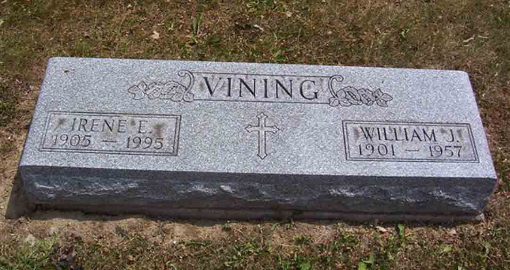

Documentation for William J. Vining - Irene E. [...]
Death Data
Headstone for William J. Vining and Irene E. ([...]) Vining, in Catholic Cemetery, Fort Wayne, Allen County, Indiana (from Find A Grave):
